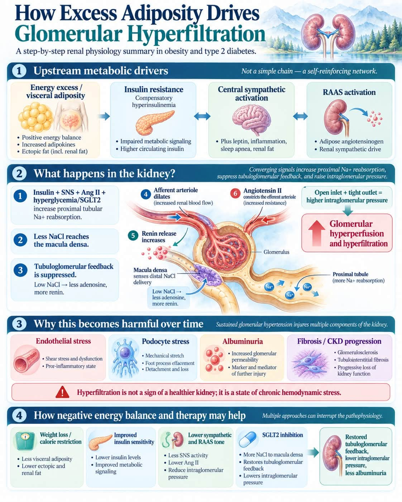
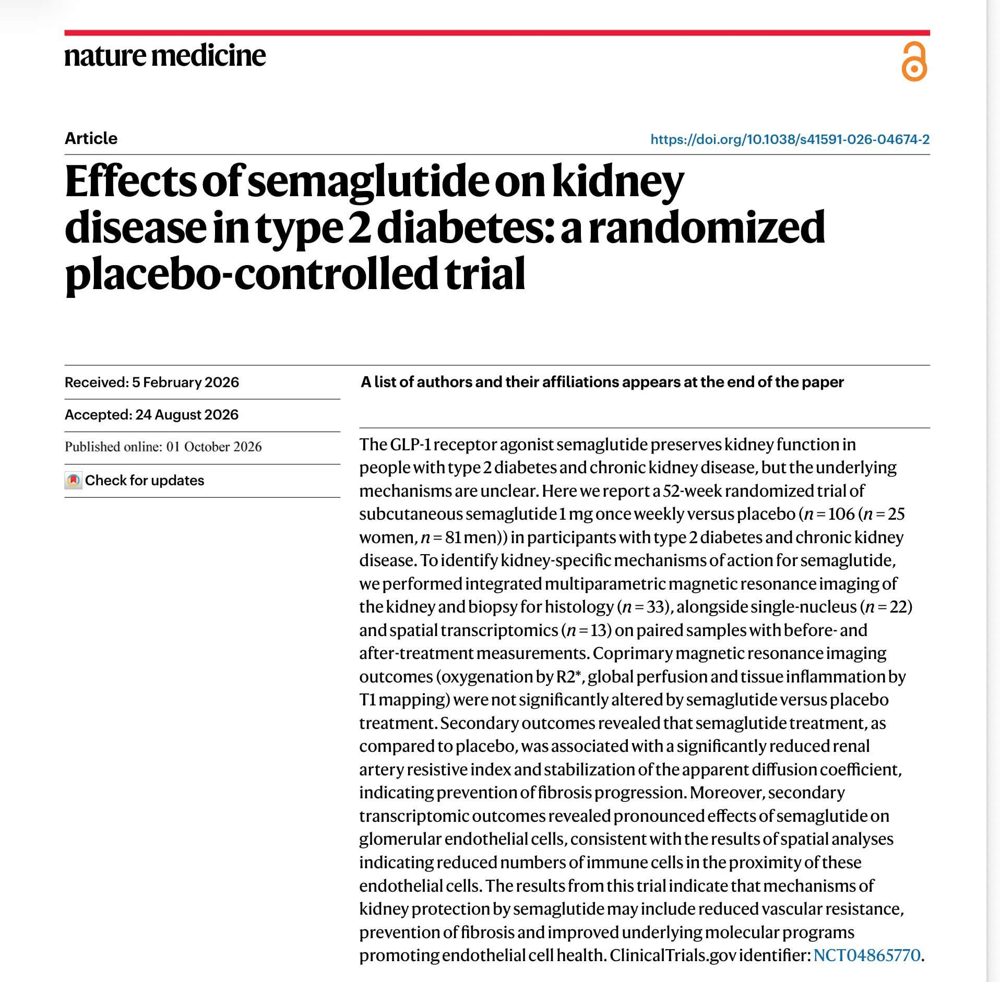
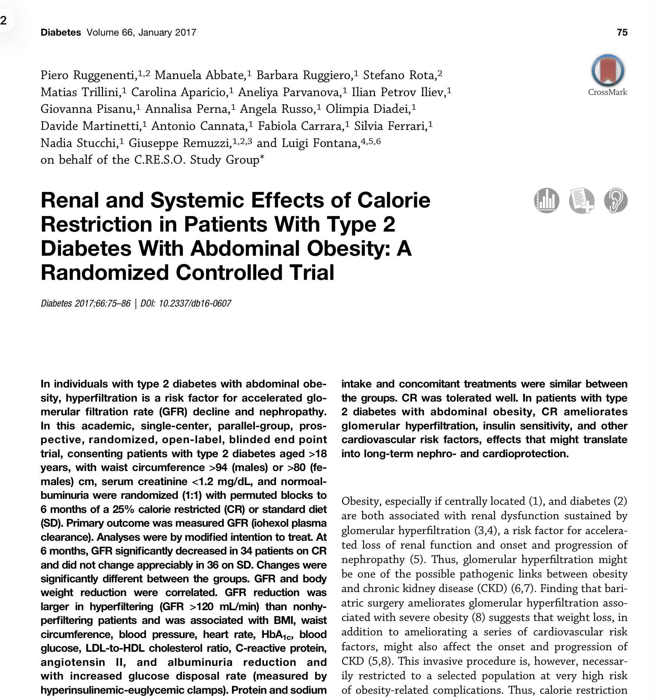

GLP1 drugs protect the kidneys of diabetics. This likely explains why.
Spoiler alert: There’s nothing special about the drugs. It’s the calorie restriction (Duh).
The act of being in negative energy balance is itself therapeutic, even before significant weight loss occurs (and even in its absence). We’ve known this is true in animals for decades now. It’s not a surprise that it is also true in humans. The drugs just make practicing calorie restriction easier.
Quoted:
“A relatively small reduction in body weight can trigger major physiological changes far beyond the number on the scale.
Negative energy balance can rapidly influence insulin sensitivity, sympathetic and renin-angiotensin activity, blood pressure, inflammation and glomerular hemodynamics.”
#glp1HD #kidneysHD #glp1kidneysHD #semaglutideHD #calorierestrictionHD
A new Nature Medicine study provides mechanistic insight into how semaglutide may protect the kidney in people with type 2 diabetes and chronic kidney disease.
In the REMODEL trial, semaglutide was associated with a 40% reduction in albuminuria, lower renal vascular resistance, less perirenal and renal sinus fat, and MRI findings compatible with stabilization of renal fibrosis. Paired kidney biopsies, single-nucleus RNA sequencing and spatial transcriptomics also pointed to changes in glomerular endothelial cells, with attenuation of metabolic, inflammatory and fibrotic programs and fewer nearby immune cells.
These findings raise a broader question:
How much of this renal benefit is specific to GLP-1 receptor agonism, and how much reflects the consequences of negative energy balance and modest weight loss?
Almost a decade ago, together with Piero Ruggenenti, Giuseppe Remuzzi and colleagues, we addressed part of this question in a randomized controlled trial published in Diabetes.
We studied people with type 2 diabetes and abdominal obesity randomized to six months of calorie restriction or a standard diet. GFR was directly measured by iohexol plasma clearance, while insulin sensitivity was quantified with the hyperinsulinemic-euglycemic clamp.
The calorie-restriction group lost only about 5% of body weight.
Yet this modest weight loss was accompanied by major physiological changes:
- reduced glomerular hyperfiltration, especially in those with the highest baseline GFR
- improved insulin sensitivity
- lower blood pressure and heart rate
- improved glycemic control
- lower CRP and angiotensin II
- reduced albuminuria
The fall in GFR was not renal injury. In these patients at an earlier stage of diabetic kidney dysfunction, it reflected correction of glomerular hyperfiltration.
The fall in GFR was related to weight loss and improved insulin sensitivity, while lower mean arterial pressure was one of its strongest predictors.
The two studies examined different stages of kidney disease and should not be considered mechanistically equivalent. REMODEL adds information on renal microvasculature, endothelial biology and the cellular environment that our earlier physiological study could not address.
Together, however, they highlight an important principle:
A relatively small reduction in body weight can trigger major physiological changes far beyond the number on the scale.
Negative energy balance can rapidly influence insulin sensitivity, sympathetic and renin-angiotensin activity, blood pressure, inflammation and glomerular hemodynamics.
GLP-1 receptor agonists are powerful therapeutic agents. But the biology observed during GLP-1 treatment should not automatically be assumed to be unique to the drug itself.



